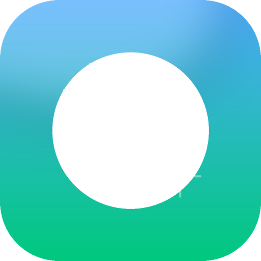

MacCleaner캐시부터 중복·잔여 파일까지, MacCleaner가 숨은 공간 낭비를 찾아 안전하게 정리합니다. CleanMyMac처럼 무겁지 않고, 네이티브 Swift로 만들어 매우 가볍습니다.
필요한 만큼만, 정확하게 — 8개 기능이 하나의 가벼운 앱 안에
캐시·로그·Xcode 파생데이터·Homebrew/npm/pip 캐시를 스캔 후 선택 정리. 휴지통 이동이라 실수해도 안전합니다.
정리·잔여·대용량·중복을 한 번에 돌려 “총 확보 가능 공간”을 즉시 요약. 도넛 그래프로 구성까지 보여줍니다.
CPU·메모리·디스크 실시간 추이(스파크라인), 상위 프로세스, 메뉴바 위젯 표시 옵션.
용량 큰 파일을 크기/이름/수정일 정렬로 탐색. 우클릭으로 파인더에서 바로 열기·경로 복사.
SHA-256 해시로 내용이 완전히 같은 파일만 그룹핑. 유지 원본 선택 후 나머지 일괄 제거.
삭제된 앱이 남긴 고아 파일을 번들ID로 검증하고, "바로 삭제 가능 / 검토 권장" 안전도를 판정해 알려줍니다.
설치된 앱 목록·용량·잔여 파일을 확인하고 안전하게 제거. Homebrew·pkg 설치기록 관리, 백그라운드 실행항목 비활성화까지.
Apple Intelligence 끄기, 개인화 광고·분석 전송 중지, Finder·자동수정 등 24가지 설정 토글. 모든 변경은 원클릭 복구 가능.
다운로드 → 드래그 → 실행, 세 단계면 충분합니다
위 버튼으로 MacCleaner.dmg를 받습니다 (v1.4, 약 1.5MB).
DMG를 열고 MacCleaner 아이콘을 Applications 폴더로 드래그합니다.
첫 실행 시 시스템 설정 → 개인정보보호 → 파일·폴더 접근에서 허용해주면 전체 스캔이 활성화됩니다.
아니요. 스캔·해시·분석이 전부 로컬에서만 처리되고 어떤 데이터도 전송되지 않습니다.
기본적으로 휴지통으로 이동해 복구할 수 있습니다. 휴지통 카테고리만 예외적 영구 삭제이며, 설정에서 안전 옵션으로 제어합니다.
macOS 14 Sonoma 이상, Apple Silicon 및 Intel 모두 지원합니다.
별도 탭에서 Formula/Cask 목록을 조회하고, brew uninstall 또는 휴지통 방식으로 제거·청소할 수 있습니다.
여러 도구의 팁·버그·업데이트 소식을 한 곳에서 모아 보는 공간입니다
MacCleaner 등 여러 실험 도구의 팁을 공유하고 버그 리포트·업데이트 소식을 받아보세요.